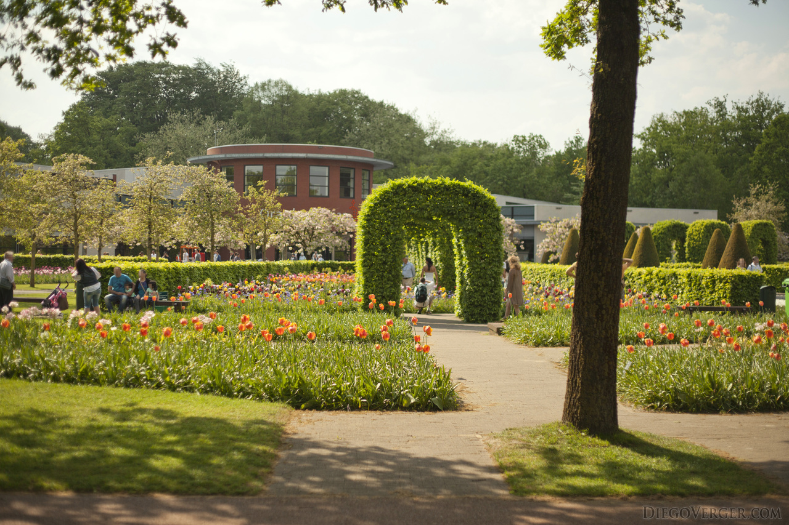
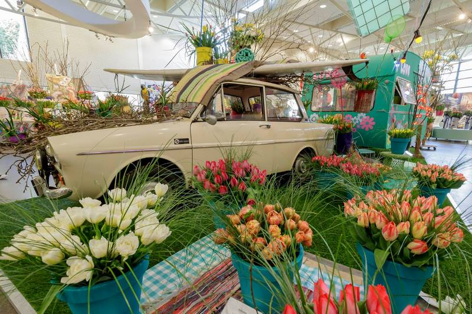
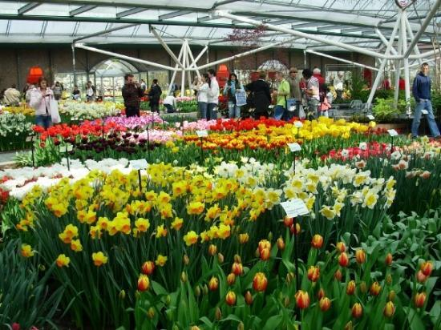
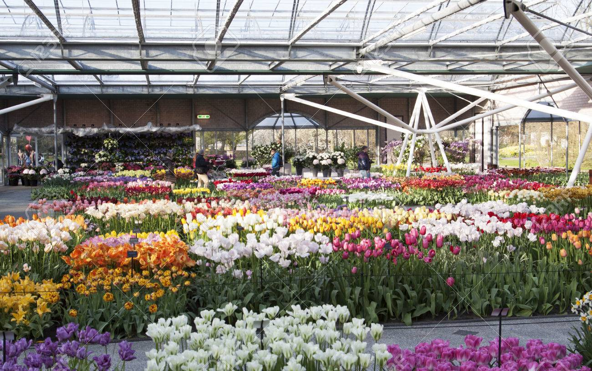
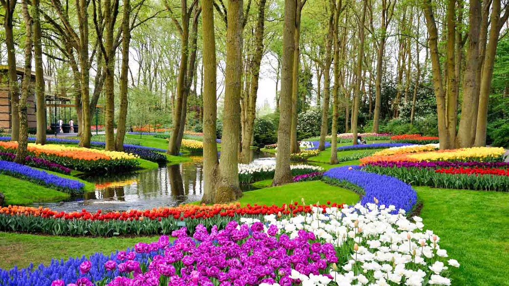
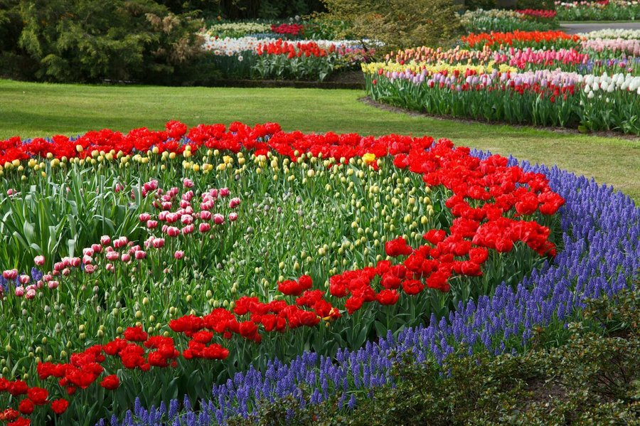
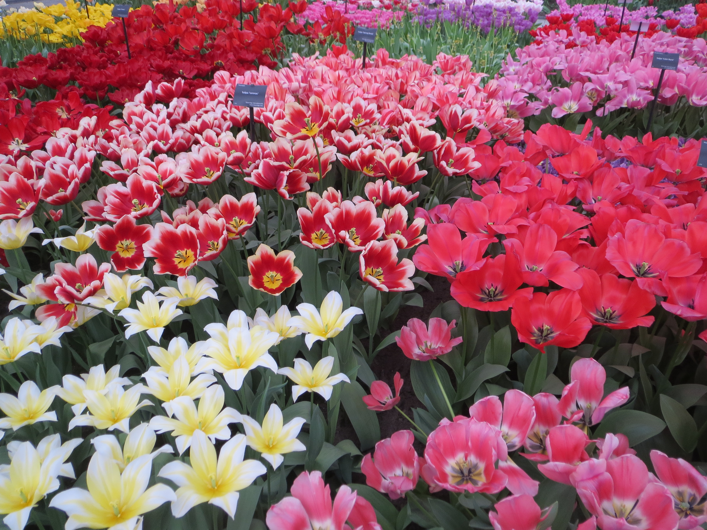
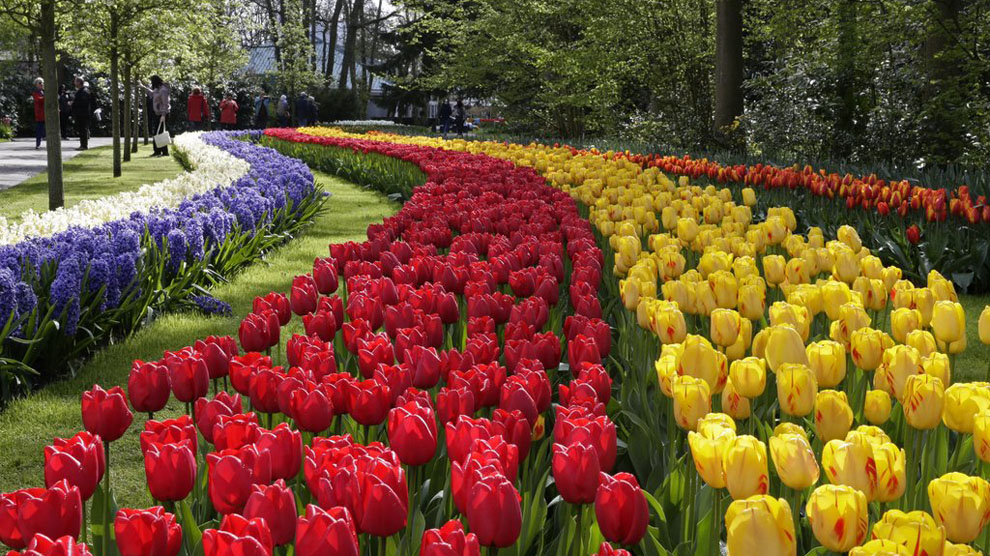

Keukenhof ("Jardín de la cocina", en neerlandés), es un extenso parque de más de 32 hectáreas situado entre las localidades de Lisse e Hillegom, en los Países Bajos. También conocido como el jardín de Europa es uno de los lugares más bellos del país. Posee una impresionante colección de flores e híbridos de diferentes especies, invernaderos (donde se venden flores, bulbos y semillas), molinos antiguos, lagos, fuentes y grandes paseos. Todo el complejo tiene un bello tratamiento artístico por lo que las flores y lagos se convierten en la base de sus inmensas avenidas.
Los terrenos del parque se encontraban dentro de las posesiones de la noble Jacoba de Baviera y se dice que fue ella misma quien le puso nombre , en uno de sus habituales paseos por la zona, con ese nombre al identificar la fragancia de las hierbas y especias con la cocina de su palacio. Tras su muerte los terrenos pasaron a manos de ricas familias de comerciantes que, conscientes de su atractivo, en el año 1840 encargaron a diversos pintores paisajistas un primer diseño de lo que sería el futuro parque. Para ello los autores se inspiraron fuertemente en el estilo inglés imperante en la época y utilizaron las flores como elemento esencial del diseño. El parque se encuentra subdividido en cuatro grandes zonas que toman nombre de la familia real neerlandesa de los Oranje:
| Pabellón Oranke Nassau |  |  |
|---|---|---|
| Pabellón Willem Alexander |  |  |
| Pabellón Koningin Beatrix |  |  |
| Pabellón Koning Juliana |  |  |